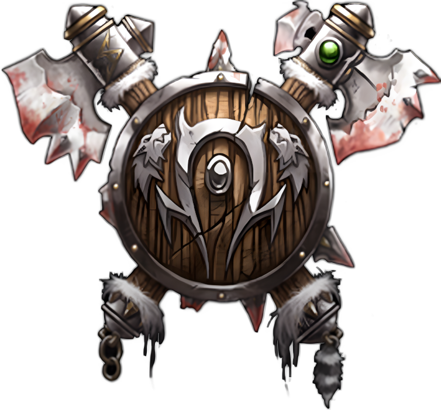

Орки
Описание
Для врагов они жестокие и устрашающие противники не имеющие равных в свирепости и хитрости. Для союзников они благородные и честнолюбивые, следующие традициям своего прошлого. Орки из Лордеронаявляются частью народа, который снова обрёл свой истинный дух, избежав жестокие практики тайной и демонической магии ради пути мудрости и силы. Некоторые из орков всё ещё придерживаются тайных практик прошлого, но их время постепенно уходит.
Хотя орки в бою жестоки и страстны, они сражаются не без грации подобной искусному фехтованию эльфийских дворян. Они чтят мастерство боя и почитают его великую силу. Именно концепция чести пронизывает орочье общество. Эта идеология сделала народ орков большой и сплочённой угрозой для Альянса.
Понятие чести пронизывает все слои общества - даже изначальное имя орка временно, он носит его пока не совершит обряд посвящения. Как только орк заслужил честь себе и своему клану, старейшины дают ему второе имя, основанное на его деянии.
Для орка честь важна так же, как и его клан. Большинство из них готовы умереть защищая репутацию клана или личную честь.
Хотя орки взрывные и эмоциональные, их нрав сдерживается мудростью лидеров и шаманов. К текущему времени осталось совсем мало кланов поклоняющихся демонам, потому что и Альянс и Орда выслеживают и истребляют их. Большинство орков приняли жизнь, ведомую мудростью, честью и ценностями, воплощенными в лидерстве Тралла, как учил его наставник Оргрим Молот Рока.
Орки являются одним из самых многочисленных народов в мире Азерота. Хотя Альянс и воспринимает их как жестоких и диких, орки, несомненно, породили сложное общество, охватывающее множество занятий и других народов. Несомненно, лидерство Тралла и поддержка старейшин тауренов и троллей джунглей способствовали этой солидарности, но совершенно очевидно, что людское общество недооценило способность орков объединяться и создавать свою собственную культуру. Возможно, со временем две фракции придут к пониманию, но с текущим разделением Альянса и Орды никто не может сказать, наступит ли между ними мир.
Внешность
Орки мужчины - массивные и брутальные на вид существа. Весом они от 100 до 140 кг, а ростов от 1.8 до 2.1 метров. Женщины орки обычно всего на 15-30см ниже большинства мужчин (а некоторые из них и равны). Все орки широкоплечи и мускулисты. У орков, как правило, щетинистые волосы и бороды, часто черного или коричневого цвета. Их кожа принимает цвет от светло-зеленого до темно-оливкового, а глаза от ярко-красного до бледно-голубого. У орков широкие, плоские носы, и клыки, выступающие из нижней (а иногда и из верхней) челюсти, и большие, заостренные уши. Они предпочитают одежду из шкур, и вооружаются разнообразным тяжёлым оружием.
Регион
Дуротар является столицой народа орков. Названная Траллом в честь его отца Дуротана, эта земля занимает восточное побережье Калимдора. Здесь молодые орки находят возможность доказать свою честь в битвах с остатками племен Иглошкурых и встречают остальные различные угрозы, зарождающиеся в Степях. Вместе с орками в Дуротаре живут и племена Троллей джунглей.
Оргриммар служит центром цивилизации орков в засушливой и враждебной земле. Этот город является самым могущественным городом Орды в мире, здесь Шаманы консультируют молодежь и обучают духовных лидеров будущего, пока воины оттачивают своё мастерство в гладиаторских ямах и других жестоких состязаниях.
Принадлежность
Орда. Тралл сформировал Орду с решительностью и чистой волей, создав союз народов, который потряс основы мира до его самого сердца. Уничтожив наследие Грома Адского Крика и выведя орков из глубин демонопоклонства, Тралл мудро и уверенно правит Ордой в Калимдоре. Орки являются такой же частью Орды, как и Орда является частью того, чем стали орки.
Вера
Религия орков имеет форму анимистической веры, которая в некоторой мере соответсвует практикам Каль'дорай. Шаманы орков, так же как и ночные эльфы, черпают силу в духах природы, образуя тесную связь с миром, который их окружает. Такой союз орков с природой привёл их к понимаю, что они живут в большей гармонии с миром,чем многие из народов Альянса, которые утверждают обратное.
Имена
Большинство имен орков происходят от слов на их языке, имеющих сложное значение или скрытый смысл для их семей. Обычно это имя любимого предмета или родственника. Фамилии у орков отсутствуют, вместо них орки используют прозвища - большинство из них связаны с каким-то великим подвигом героизма или чести. Однако, в случае действительно невероятных подвигов, орк может взять прозвище своего отца, чтобы гарантировать, что летопись его поступка будет продолжать жить.
Мужские имена
- Трум
- Дрог
- Горрум
- Харг
- Тхург
- Карг
- Громм
Женские имена
- Громма
- Харгу
- Игрим
- Агра
- Драгга
- Грима
Прозвища
- Молот рока
- Мёртвый глаз
- Связующий враг
- Убийца эльфов
- Крушитель черепов
- Потрошитель
- Рог слёз
- Разрушающий кулак
